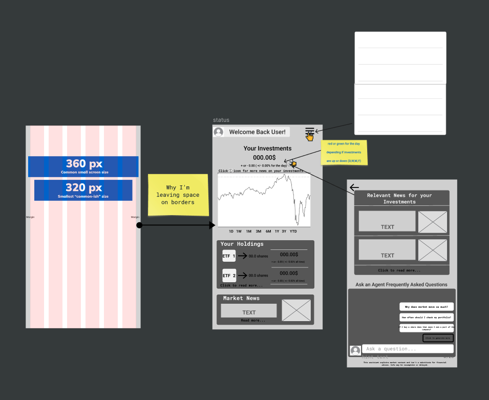
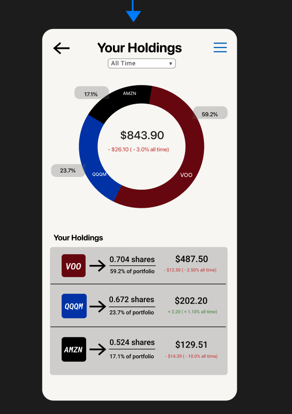

Investing Portfolio Comprehension App
A concept exploring why new investors see their portfolio value change but lack context for why — currently moving from research into high-fidelity Figma prototypes.
Conducted UX research across trading platforms and investor communities to identify a comprehension gap: new investors see portfolio value changes but lack context for why they occur.
Synthesized findings into a research-based persona and problem statement, currently translating into high-fidelity Figma prototypes.
Framed the design problem around three "How Might We" questions:
- How might we help new investors with little to no market knowledge understand price movements without making it too complicated?
- How might we design around unavoidable information delays, so users aren't left waiting on the news to catch up to the markets?
- How might we explain investing concepts in simpler terms without dumbing them down?
One resulting flow: when a user's portfolio dips into the red for the day, a "historical context" screen surfaces daily, weekly, and monthly fluctuation data so they can see the dip is normal before looking anywhere else for reassurance.

Add images/project-3.jpg (Home page wireframe)- Centered the dollar amount and growth percentage on the home screen so it's the first thing users see, rather than buried under a welcome message.
- Kept the layout to three focused sections: an investments overview with an info icon for more context, a general market news feed, and a holdings list.
- Holdings show all-time performance instead of daily change, to give investors a bigger-picture view.
 Add images/project-3-2.jpg (High-fidelity prototype)
Add images/project-3-2.jpg (High-fidelity prototype)
- Took visual inspiration from Wealthsimple's calm, minimal aesthetic for the home page direction.
- Calm, warm mood: an off-white background, soft blues, and muted greens/reddish-oranges for gains and losses instead of punchy red/green, so daily fluctuations feel less emotionally charged.
- Kept color usage minimal overall so the interface doesn't compete with the data.
- Switched typography from Inter to SF Pro Rounded for a softer feel.
- Rounded corners throughout, plus +/- indicators alongside color so the app stays accessible for colorblind users.

Add images/project-3-3.jpg (Holdings page)The donut chart breakdown on the Holdings page was inspired by Blossom, giving investors a quick visual sense of how their portfolio is allocated across holdings — once again, avoiding information overload for beginner investors.
More to come...